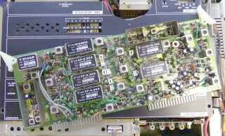
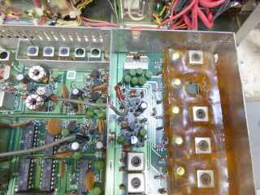
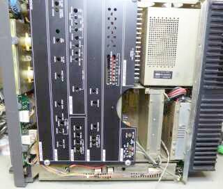
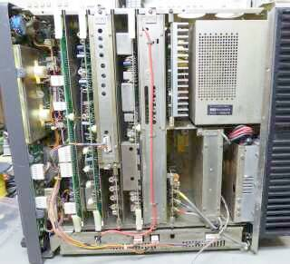
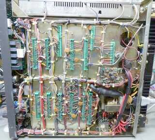

|
|
ゼネラル・カバレッジ・オールモード・ソリッドステート・トランシーバと明記してあります
入手時の設定は、受信はゼネラル・カバレッジ、送信についてはＷＡＲＣバンドを含む、アマチュアバンド全てでしたが、銘板の通り送受共にゼネラル・カバレッジ設定にしてしまいました |
|
 |
左写真は、ＩＦユニットです
贅沢にと言うか、まずはフィルタの多さにビックリ
ご覧のように、フル・オプションです
エレキー（ＫＥＹＥＲ）ユニット、ＦＭユニットも内蔵してありました
本機、あるいはＦＴ－９８０でよく話に出てくる、タンタル・コンデンサのショートによるトラブルは、見当たりません |
|

飴色に見えるところが、固められたコイル群
上から二つ目を取り外したところです
（20.0～24.999MHzをカバーするコイル)
ラジオペンチで摘んだことで、破壊してしまった
東光１０ＫタイプのＲＦトランスを入手し、
新たに巻き直しました
ここで、ディップ・メーターが活躍しました
久しぶりの登場でした！ |
今回一番の苦労は、こちらのＰＬＬユニットの修理
３０ＭＨｚを６つに分けてカバーしているのですが、そのうちの２つのＯＳＣコイルのコアが割れていて、回すことができません
この２つのコイルが関わる、１５．０～１９．９９９ＭＨｚと、２０．０～２４．９９９ＭＨｚが正常に動作しません
ご覧のように、コイルは松ヤニのようなもので固められており、簡単に取り外しができません
ひとつ目のコイルの取り外し中に、コイルを壊してしまいました（シールドケース毎潰してしまった）
ふたつめは、ひとつ目の経験から上手に取り外せました（割れたコアの交換は、結構大変！）
左写真は、ひとつ目のコイル（上から２つめ）を取り外したところを撮したもの
壊したコイル、その様子が分からないほど壊したため、久しぶりにディップ・メータのお世話になりました
・ＰＬＬユニット内
ＯＳＣコイルの巻き直し、コア交換及び調整
２つのクリスタル・オシレータの周波数が合わない
トリマ並列の固定コンデンサを交換して調整
温度補償用のセラ・コンを入手、です
・感度低下
リレーの接触不良
・音量が極端に低い
ＡＦＰ／ＮＯＴＣＨスイッチの接触不良
・Ｓメータが振れない
調整ＶＲの接触不良
以上の対応で、ほぼスペックどおりの動きをしてくれるようになりました |
|

何となく？丸く空いているのは内蔵スピーカー位置 |
 |
ＴＯＰ側の様子 右は、カバーを取り外した状態で撮したもの
内蔵スピーカーは上面カバーに取り付いています
一番下に、横方向に長く見えているのが、PLLユニットです |
 |
こちらは、ＢＯＴＴＯＭ側の様子
フロントあるいはリアパネルが一見似て見える、ＦＴ－９８０とは全く異なっています
いきなり基板が見えるＦＴ－９８０とは異なり、ＦＴ－１０１と同じというか、業務用無線機に良くある延長ボードがないと調整に困る、プラグイン・ユニット方式が採用されています
そのため、シャーシ下はワイヤー・ハーネスばかりが目に付く、整然とした眺めになっています
上側のシールドされて写っているものが、ＰＬＬユニットです |
|
時代がバブリーなのか、初めてのゼネカバ・マシンの取り組みということで、意欲的に最新技術を詰め込んだのか、ありとあらゆる機能、「もの」が取り付いているというような印象を持ちます
連続可変のＰＩＮダイオードを使ったＲＦアッテネータ、パワートランジスタをプッシュプルで採用したＲＦアンプ、ショットキーバリアダイオードによるバランスドミキサの多用・・・
高いダイナミックレンジと、良好な二信号特性を得るために、使える技術は全て使った、みたいなところを感じます
ＩＦ ＳＨＩＦＴ／ＷＩＤＴＨコントロールもなかなかシャープです
ＣＷ送信も、フルブレークインに対応しています
業務用っぽい機能として、オートマチック・マイクゲイン・コントロール機能を内蔵してあります
ノイズ・キャンセル・マイクよろしく、一定以上のマイク入力があったときに正常マイク増幅動作、低レベルの入力に対してはマイク増幅のレベルを下げます |
|